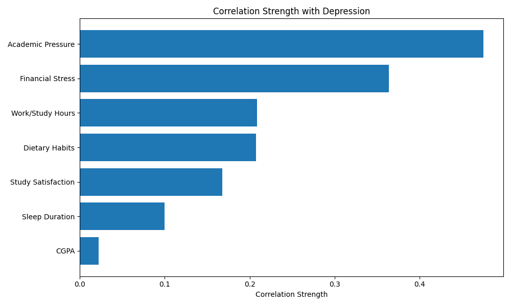

Introduction
In India's competitive educational environment, students face immense pressure to excel academically. While their achievements are celebrated, the mental health challenges they face often remain hidden. Our project examines data from nearly 28,000 university students across India to understand the scope of this silent crisis and identify factors that contribute to student depression.
We chose to focus on this issue because student mental health represents an urgent yet frequently overlooked problem. With more than 60% of students in our dataset reporting depression symptoms, there's a clear need to shed light on the struggles that exist beneath the surface of academic achievement. As students ourselves, we connect with these challenges and wanted to create visualizations that help others understand the complex factors influencing mental wellbeing in educational settings.
Students Surveyed
University students across India
Depression Prevalence
Students reporting depression symptoms
Data features
Factors analyzed per student
About This Project
Our analysis uses the Student Depression Dataset from Kaggle, which includes comprehensive information about students' mental health status, academic performance (CGPA), lifestyle habits (sleep patterns, social media usage), demographics (age, gender), and other mental health indicators (suicidal thoughts, family history of mental illness). Through interactive visualizations, we aim to tell a human story that goes beyond statistics and helps identify warning signs and risk factors for depression among students.
Understanding the Dataset
Before diving into visualizations and statistics, we took a step back to understand how this dataset actually looks like. Each row represents a student, the mental health of nearly 28,000 university students across India. But like any real-world dataset, it needed some tidying before we could ask it serious questions.
Fortunately, the dataset had no missing values, really rare in survey data. Still, several columns contained long or inconsistent labels, and many responses were written as words instead of numbers. To make the dataset easier to work with, we performed a series of preprocessing steps to clean and convert the data while preserving its meaning.
- Simplifying column names: Long labels like "Have you ever had suicidal thoughts?" were renamed to something more manageable, like
Suicidal_Thoughts. - Turning words into numbers: Yes/No answers were converted into binary format — 1 for “Yes,” 0 for “No.” This was applied to columns like
Suicidal_ThoughtsandFamily_History. - Ranking stress levels: Ordered categories such as
Financial_Stresswere encoded numerically — Low = 1, Medium = 2, High = 3 — so we could compare stress levels more meaningfully. - Making time measurable: Sleep duration categories like “5–6 hours” or “Less than 5 hours” were mapped to estimated numeric values (e.g., 5 or 4 hours) for consistency.
- One-hot encoding: Variables like
GenderandProfessionwere split into multiple binary columns so they could be analyzed without assuming any order or hierarchy.
These changes made the much more dataset cleaner, we also become able to explore relationships between stress, lifestyle, and mental health in a much more precise way.
Gender Distribution
This chart shows a relatively even mix of male and female respondents. It is an important detail that makes gender comparisons meaningful throughout the analysis.
Age Distribution
Most students in the dataset are between 19 and 25 years old, which reflects the typical university demographic. This makes the data especially relevant for understanding challenges faced during the academic years.
Prevalence of Depression
Over half of the students surveyed show signs of depression. This chart shows the emotional core of the dataset and sets the stage for the deeper analyses that follow.
Depression Prevalence
The data reveals an alarming prevalence of depression among Indian university students. Our analysis breaks down depression rates across different demographic groups and educational levels, highlighting patterns that might otherwise go unnoticed.
Pie Chart Visualization Will Appear Here
Key Insights
More than 60% of surveyed students report experiencing depression symptoms, a figure significantly higher than in the general population. This widespread prevalence suggests that the academic environment may create unique pressures that affect mental health. The pie chart above provides a visual representation of just how common depression has become among Indian students.
Education Level Chart Will Appear Here
Education Level Analysis
Depression rates vary significantly across different education levels. Undergraduate students show particularly high rates of depression, possibly reflecting the challenges of transitioning to university life and coping with new academic expectations. The visualization above allows us to compare depression prevalence across education levels, helping identify when students might be most vulnerable.
Contributing Factors
Multiple factors influence student mental health, from lifestyle choices to academic pressures. In this section we will explore how various aspects of student life correlate with depression, providing insights into potential risk factors and protective measures.
Correlation
Although by exploring the data in the interactive visualization above we can see the depression trends per each category, one of the most interesting things to know is which of the factors are most strongly correlated with deprresion. To explore this, we tested the correlation between each of the factors and the depression rate using the Cramer's V and point-biserial correlation based on the feature type. The results are shown in the chart below.
The chart show that by far the most correlated factor with depression is the academic pressure, followed by financial stress.
Factors Analysis
Whilst the financial and academic stress are the most correlated with depression, we can see that the sleep and Dietary habits are also very important factors that contribute to depression.
The map of depression
Where you study may affect how you feel. To explore this, we mapped the depression rates of students across Indian cities using survey data from nearly 28,000 university students. Each dot on the map represents a city, colored from green to dark red depending on how many students reported symptoms of depression. The darker red the circle, the more students reported suicidal thoughts from that city.
Interactive map: Click ovon a city to see depression rates and student counts.
The results are striking. In many large cities, the rate of depression among students appears worryingly high. In some cities, more than half of the surveyed students reported signs of depression. While this map does not explain why students are struggling, it gives us important infomations. Cities with higher stress environments, whether due to cost of living, academic pressure, or lack of support systems, tend to show deeper shades of red. Click around, and the invisible patterns start to emerge. These are not just numbers. They are signals from young people who are often expected to perform under pressure but rarely asked how they're doing.
Recommendations
Based on our analysis of the data, we propose several evidence-based approaches that could help address the mental health crisis among Indian students. These recommendations target different stakeholders in the educational ecosystem.
For Educational Institutions
Universities and colleges should prioritize mental health by establishing accessible support services and creating awareness programs. Considering the correlation between sleep deprivation and depression, institutions might benefit from reviewing assignment schedules and exam timings to allow for healthier sleep patterns. Additionally, incorporating stress management and emotional resilience into the curriculum could provide students with practical coping skills.
For Students
Maintaining healthy sleep habits appears crucial for mental wellbeing, with our data showing significantly lower depression rates among students who sleep 7-8 hours regularly. Limiting social media usage and building supportive social connections also correlates with better mental health outcomes. Students should be encouraged to recognize early signs of depression and seek help promptly, as early intervention can prevent more serious mental health issues.
For Parents and Families
Families play a crucial role in supporting student mental health. Our data suggests that high parental expectations regarding academic performance may contribute to depression in some cases. Parents should be encouraged to maintain open communication about mental health issues, recognize warning signs, and prioritize overall wellbeing alongside academic achievement. Creating home environments where students feel comfortable discussing mental health challenges can help ensure timely support.